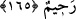

ÜSTÜNLÜKLER İMTİHAN İÇİNDİR
165. Sizi yeryüzünün halifeleri kılan, size verdiği (nimetler) hususunda sizi
denemek için kiminizi kiminizden derecelerle üstün kılan O’dur. Şüphesiz Rabbin,
cezası çabuk olandır ve gerçekten O, bağışlayan merhamet edendir.
Ey insanlar! “Sizi yeryüzünün halifeleri yapan,” yani cinlerden sonra veya sizden
önce gelip geçen ümmetlerden sonra ya da yeryüzünde tasarruf eden Allah’ın halifeleri
kılan O’dur.
Geçip giden herkesin ardından gelen bir öncekinin halifesidir. Çünkü o, öncekinin
peşinden gider.
et-Te’vîlâtü’n-necmiyye’de şöyle denilmiştir: “Allah, Âdemoğullarından her birini
vaktinin Âdem’i ve yeryüzünde Rabb’inin halîfesi kılmıştır.
Allah’ın halifesi olmanın sırrı şuradadır: Allah insanı kendi zatının sıfatlarının
sûretinde hayat sahibi, çekip çeviren, işiten, gören, bilen, güç sahibi, konuşan ve iradesi
olan bir varlık olarak yaratmıştır.
İnsanlık nedir? Halk ve Hakk’ın
Suretinin bir arada olduğu bir berzah
“Size verdiği şeylerde sizi denemek için” zenginlik ve soylulukta “kiminizi
kiminizden” çok ve farklı “derecelerle üstün kılan O’dur.” Yani O, sizin şükür mü
yoksa nankörlük mü edeceğinizi görmek için size, imtihan edenin ve sınayanın yaptığı
muameleyi yaptı.
Hikaye edilir ki Cüneyd Bağdadî çocukluğunda arkadaşlarıyle birlikte oynuyordu. O
sırada oradan Seriy Sakati geçti. Seriy, Cüneyd’e: “Ey çocuk, şükür hakkında ne
dersin?” dedi. Cüneyd: “O’nun verdiği nimetlerle O’na isyan etmemendir.” diye cevap
verdi.
Ey Muhammed! “Şüphesiz Rabb’in, cezası çabuk olandır.” Allah’ın cezası, koyduğu
sınırlara riayet etmeyen ve verdiği nimetlere şükretmeyene çabuk ulaşır. Allah, Halîm
olduğu ve kendisine isyan edenleri hemen cezalandırmayıp mühlet verdiği halde zatı
hakkında; “cezası çabuk olandır” buyurmuştur. Çünkü, gelecek olan her şey yakındır.
Hâfız der ki: